Agama-v0.2.41-Updates
Enhancements
- Custom electrum servers config
- The ability to configure a custom electrum server list has been added to
Settings -> App Config
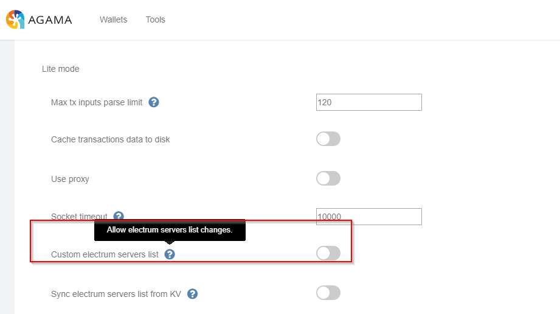
- Extended argv - Dev only
- KV electrum list
- The ability to sync the electrum servers list from KV has been added to
Settings -> App Config
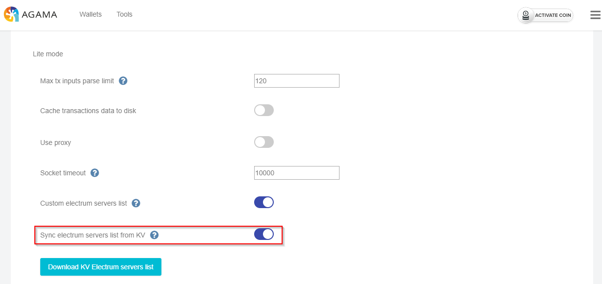
- Load coins list from file on app initialization
- To enable loading your favorite coins from a file select the Load coins list from file option in
Settings -> App Config
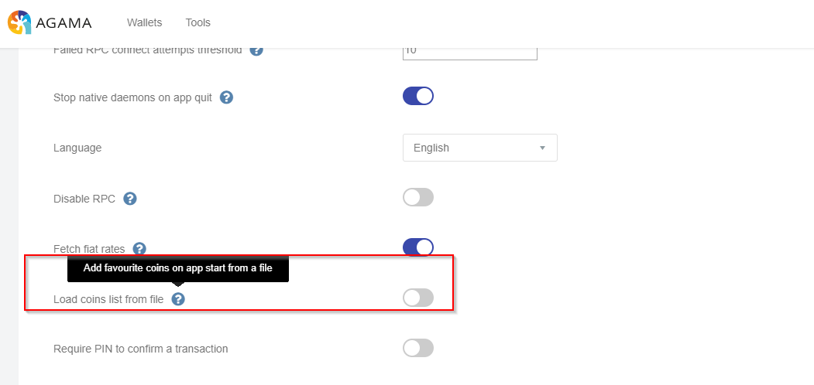
- KV electrum servers list
- The KV electrum server list may now be downloaded by selecting the Download KV Electrum servers list button in
Settings->App Config
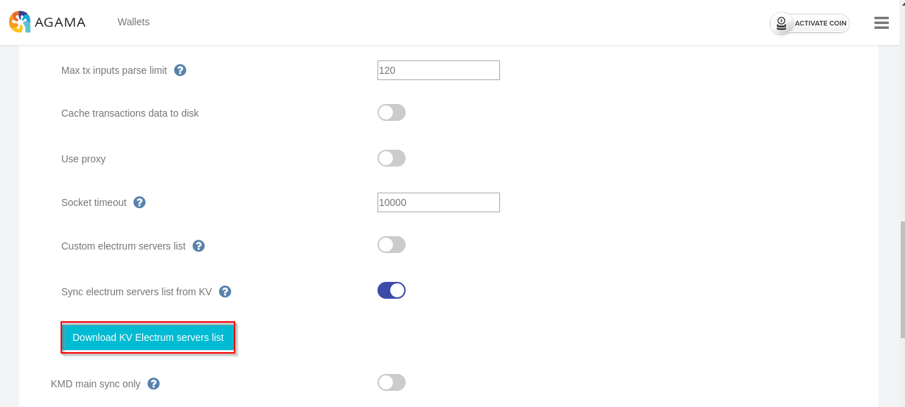
- Spv watch-only hides KMD claim button
- If
KMD is logged in as watch only, then the claim rewards button will now be hidden.
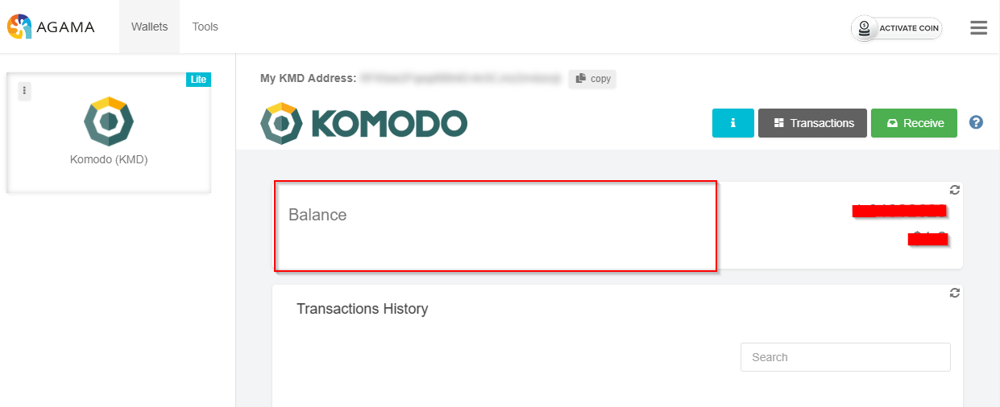
- Updated support page
- Support tickets link has been updated to https://support.komodoplatform.com
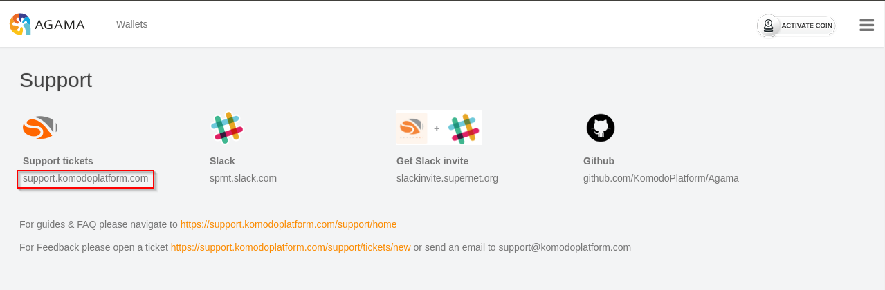
- Spv balance subtract unconfirmed balance, displays info icon
- The info icon has been added to the
Send -> Confirming screen
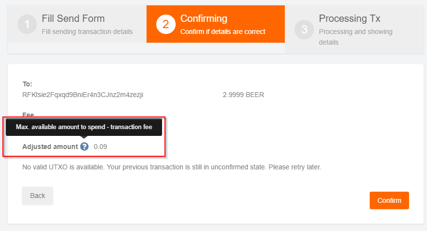
- Updated asset explorers to point to *.kmdexplorer.io - Dev only
- ZILLA coin added.
- Chainzilla coin is now available in the Activate Coin screen
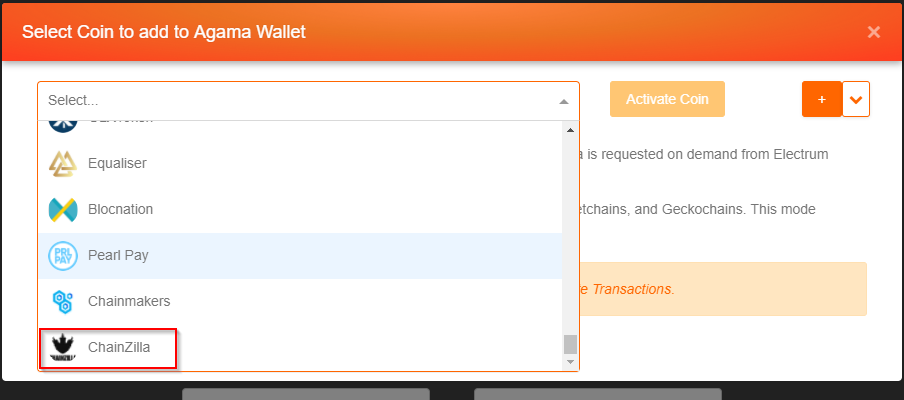
- Chainzilla wallet creation
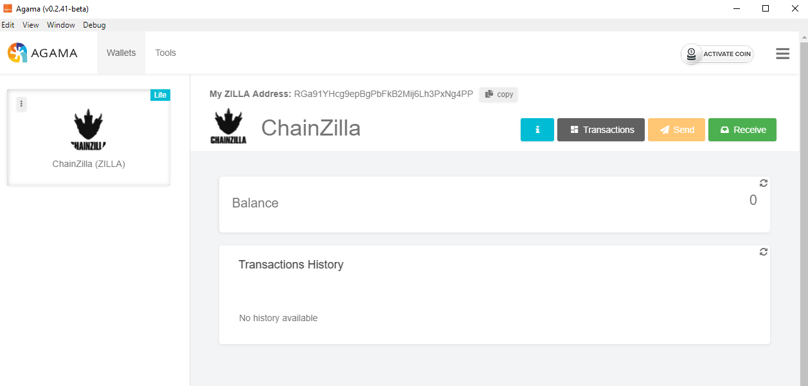
- Tx history csv export
- Exporting the tx history in csv format is now available in the bottom portion of Transactions screen
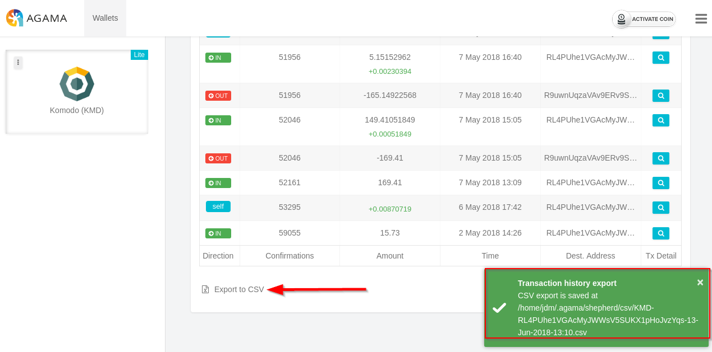
- Spv
Send - no valid utxo - message handling
- A new utxo validation message will now display with more detail
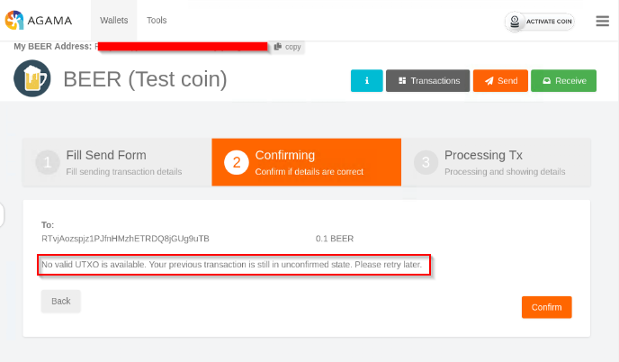
- Spv send confirm with pin
a .To require a pin for send transactions go to Settings -> App Config -> Require pin to confirm transaction tab
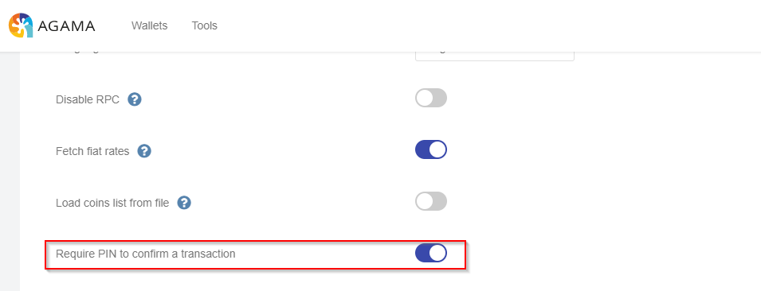
- Once enabled save changes then restart the wallet. Now when making a send transaction your pin is required before confirming
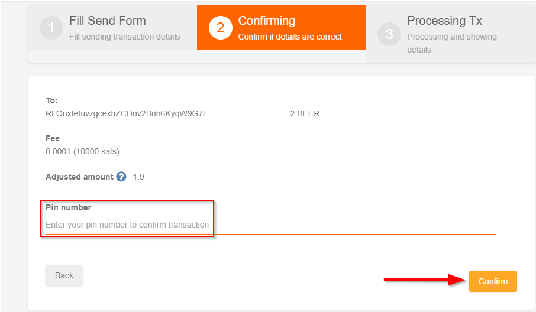
Fixes
- KV null history display fix
- KV history refresh fix
- KV history refresh button fix
- Native send result table css overflow fix
- Fixed settings save bug that got socket timeout param broken
- Fixes the recent SPV connectivity issues